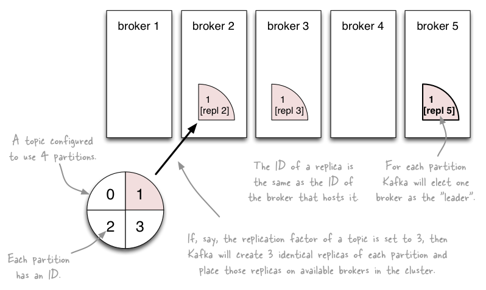
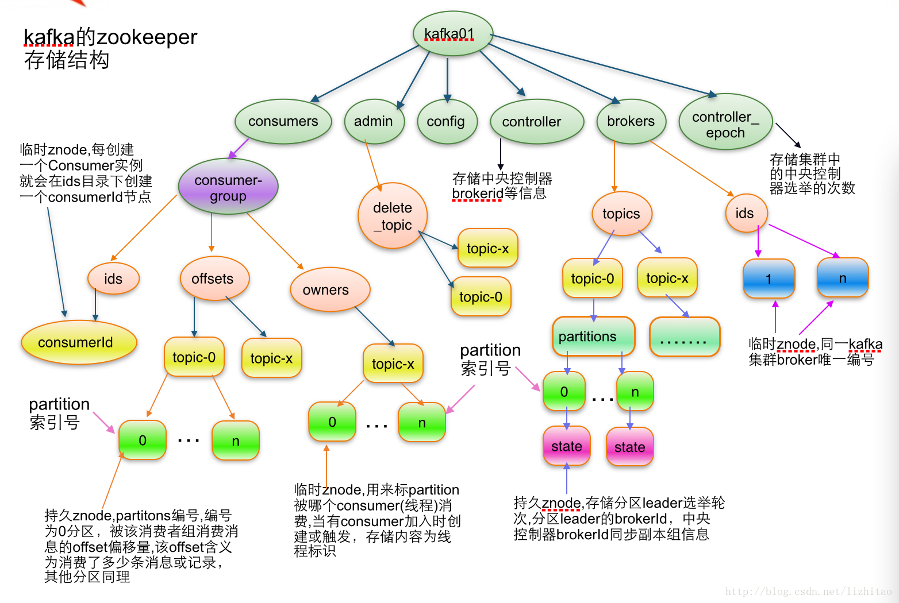

kafka工作原理
- http://www.aboutyun.com/thread-11895-1-1.html
- kafka入门：简介、使用场景、设计原理、主要配置及集群搭建（转）:http://www.cnblogs.com/likehua/p/3999538.html
- apache kafka系列之在zookeeper中存储结构：http://blog.csdn.net/strawbingo/article/details/45484139
- Kafka文件存储机制那些事:http://www.open-open.com/lib/view/open1421150566328.html
- apache kafka系列之server.properties配置文件参数说明:http://blog.csdn.net/lizhitao/article/details/25667831
- kafka入门:http://bit1129.iteye.com/blog/2174791
- Kafka 设计与原理详解:http://blog.csdn.net/suifeng3051/article/details/48053965
Kafka系统的角色
- Broker ：一台kafka服务器就是一个broker。一个集群由多个broker组成。一个broker可以容纳多个topic
- topic： 可以理解为一个MQ消息队列的名字
-
Partition：
- 为了实现扩展性，一个非常大的topic可以分布到多个 broker（即服务器）上，一个topic可以分为多个partition，每个partition是一个有序的队列。
- partition中的每条消息都会被分配一个有序的id（offset）。kafka只保证按一个partition中的顺序将消息发给consumer，不保证一个topic的整体 （多个partition间）的顺序。
- 也就是说，一个topic在集群中可以有多个partition，那么分区的策略是什么？(消息发送到哪个分区上，有两种基本的策略，一是采用Key Hash算法，一是采用Round Robin算法)

- Offset：kafka的存储文件都是按照offset.kafka来命名，用offset做名字的好处是方便查找。例如你想找位于2049的位置，只要找到2048.kafka的文件即可。当然the first offset就是00000000000.kafka
- Producer ：消息生产者，就是向kafka broker发消息的客户端。
- Consumer ：消息消费者，向kafka broker取消息的客户端

-
Consumer Group （CG）：
- 消息系统有两类，一是广播，二是订阅发布。广播是把消息发送给所有的消费者；发布订阅是把消息只发送给订阅者。Kafka通过Consumer Group组合实现了这两种机制： 实现一个topic消息广播（发给所有的consumer）和单播（发给任意一个consumer）。一个topic可以有多个CG。
- topic的消息会复制（不是真的复制，是概念上的）到所有的CG，但每个CG只会把消息发给该CG中的一个 consumer（这是实现一个Topic多Consumer的关键点：为一个Topic定义一个CG，CG下定义多个Consumer）。如果需要实现广播，只要每个consumer有一个独立的CG就可以了。要实现单播只要所有的consumer在同一个CG。用CG还可以将consumer进行自由的分组而不需要多次发送消息到不同的topic。
- 典型的应用场景是，多个Consumer来读取一个Topic(理想情况下是一个Consumer读取Topic的一个Partition）,那么可以让这些Consumer属于同一个Consumer Group即可实现消息的多Consumer并行处理，原理是Kafka将一个消息发布出去后，ConsumerGroup中的Consumers可以通过Round Robin的方式进行消费(Consumers之间的负载均衡使用Zookeeper来实现)

A two server Kafka cluster hosting four partitions (P0-P3) with two consumer groups. Consumer group A has two consumer instances and group B has four.
Topic、Partition和Replica的关系

如上图，一个Topic有四个Partition，每个Partition两个replication。
Zookeeper在Kakfa中扮演的角色Kafka将元数据信息保存在Zookeeper中，但是发送给Topic本身的数据是不会发到Zk上的，否则Zk就疯了。
- kafka使用zookeeper来实现动态的集群扩展，不需要更改客户端（producer和consumer）的配置。broker会在zookeeper注册并保持相关的元数据（topic，partition信息等）更新。
- 而客户端会在zookeeper上注册相关的watcher。一旦zookeeper发生变化，客户端能及时感知并作出相应调整。这样就保证了添加或去除broker时，各broker间仍能自动实现负载均衡。这里的客户端指的是Kafka的消息生产端(Producer)和消息消费端(Consumer)
- Broker端使用zookeeper来注册broker信息，以及监测partition leader存活性。
- Consumer端使用zookeeper用来注册consumer信息，其中包括consumer消费的partition列表等，同时也用来发现broker列表，并和partition leader建立socket连接，并获取消息。
- Zookeeper和Producer没有建立关系，只和Brokers、Consumers建立关系以实现负载均衡，即同一个Consumer Group中的Consumers可以实现负载均衡。
问题
-
Topic有多个Partition，那么消息分配到某个Partition的依据是什么？
- Key Hash或者Round Robin
-
如何查看一个Topic有多少个Partition？
- 使用kakfa-topic.sh --list topic topicName --zookeeper zookeeper.servers.list
zookeeper存储结果
[zk: localhost:2181(CONNECTED) 0] ls /
[admin, consumers, config, brokers]
